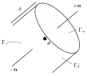

4 Mass, Forces and Stress
With a large amount of mathematical background now out of the way, we are able to begin thinking more carefully about the important physical concepts which will be central to developing models of solids and fluids. The central assumption we will make here is that it is reasonable to treat the objects we consider as continuum objects, i.e. that the objects are infinitely divisible, just like the real numbers that we use to describe them.
This assumption is of course false, since we know that solids and fluids are made up of atoms, which are not themselves easily divisible in everyday contexts. Nevertheless, the equations of continuum mechanics are one of the great triumphs of mathematical modelling, since the predictions which can made with them are highly accurate, and hold even down to scales which are only just above the atomistic length scale. Exploring the extent of their validity, and the connections between atomistic and continuum models remains an active research topic.
Aims. By the end of this chapter, you should be able to:
Define what is meant by the terms body, mass density, centre of mass, body force, resultant force, resultant torque, surface force, and traction.
State Cauchy’s Postulate, and use it to show the existence of the Cauchy stress field.
State the definition of static mechanical equilibrium, and derive the local equations satisfied by the Cauchy stress field in this case.
Explain the concept of stress, and use various terms to describe particular stress states.
4.1 Bodies
Our assumption that a material body is a continuum means that we can identify the body with B, an open subset of Euclidean space {\mathbb{E}}^3. Each point {\boldsymbol{x}}\in B is identified with a material particle. Note here that our use of the word particle does not refer to an atom, but rather an infinitesimal part of the body. We call B a configuration of the body in {\mathbb{E}}^3. Unless explicitly mentioned otherwise, we will always assume that B is a regular region of {\mathbb{E}}^3.
Our own experience tells us that material bodies move and change shape under the effects of physical processes, and we will indeed consider such effects later, which will necessitate thinking about how the body varies. For the moment however, we will ignore time variation, and focus only on a single configuration.
4.1.1 Volume and area
We recall that the volume {\operatorname{vol}}(\Omega) of a set \Omega\subseteq{\mathbb{E}}^3 can be computed by integration, so that {\operatorname{vol}}(\Omega) = \int_\Omega {\,{\mathrm{d}}V_{{\boldsymbol{x}}}}. Similarly, the area {\operatorname{area}}(\Gamma) of a surface \Gamma\subset{\mathbb{E}}^3 can also be computed by integration, so that {\operatorname{area}}(\Gamma) = \int_\Gamma {\,{\mathrm{d}}A_{{\boldsymbol{x}}}}.
4.2 Mass, momentum, forces and torque
Mass is the property of matter which quantifies its resistance to acceleration, and forces are the influences acting on an object which may result in an acceleration. In classical mechanics, this is exemplified by Newton’s second law of motion for objects with constant mass, which should be familiar: \begin{aligned} \text{Net force acting} &= \text{Mass} \times \text{Acceleration},\\[1mm] {\boldsymbol{F}}&=m{\boldsymbol{a}}. \end{aligned} In its more general form, Newton’s second law states that \begin{aligned} \text{Net force acting} &= \text{Rate of change of momentum},\\ {\boldsymbol{F}}&=\frac{d{\boldsymbol{p}}}{dt}=\frac{d}{dt}(m{\boldsymbol{v}}), \end{aligned} where the (linear) momentum {\boldsymbol{p}} is the product of the mass and the velocity of an object. Using the first of these relations, we see that the greater the mass of an object, the greater the force that is required to accelerate that object at the same rate.
When they are first introduced, the concepts of mass and force are typically applied to point particles. Here, we will consider bodies which are extended, and so as concepts, the mass of a single point or a force acting on a single point makes little sense. Instead, we introduce fields representing densities of mass and forces. To represent the mass, we define a mass density, and we focus on two particular types of forces: body force fields which act on points within the object, and surface force fields, which are act on surfaces, either within the object or on its exterior.
4.2.1 Mass density
We assume will assume that the mass of a body B is distributed across its volume, that any subset of B with non-zero volume must also have non-zero mass, and that the mass of any region of the body tends to zero as the volume of the region tends to zero.
If \Omega\subseteq B is an open subset of B, we denote the mass of this subset {\operatorname{mass}}(\Omega). We assume that there exists a mass density field \rho:B\to{\mathbb{R}}, with units of mass per unit volume, such that {\operatorname{mass}}(\Omega) = \int_\Omega \rho({\boldsymbol{x}}){\,{\mathrm{d}}V_{{\boldsymbol{x}}}}. Theoretically-speaking, if we know the mass and volume functions, we can formally define the mass density field \rho as follows. Let {\boldsymbol{x}}\in B and let \Omega_\delta({\boldsymbol{x}})\subseteq B denote a family of volumes with {\boldsymbol{x}}\in\Omega_\delta({\boldsymbol{x}}) for all \delta>0, and {\operatorname{vol}}(\Omega_\delta({\boldsymbol{x}}))\to0 as \delta\to0. Then \rho({\boldsymbol{x}}) = \lim_{\delta\to 0} \frac{{\operatorname{mass}}(\Omega_\delta({\boldsymbol{x}}))}{{\operatorname{vol}}(\Omega_\delta({\boldsymbol{x}}))}. Our basic assumptions on the mass distribution is that this limit exists, is strictly postive, i.e. \rho({\boldsymbol{x}})>0 for each {\boldsymbol{x}}\in B, and this limit is independent of the precise choice of family \Omega_\delta({\boldsymbol{x}}) which have the properties described.
4.2.2 Centre of Mass
The centre of mass and the centre of volume of an open subset \Omega\subseteq B respectively mean the points \begin{aligned} {\operatorname{com}}(\Omega) &= \frac{1}{{\operatorname{mass}}(\Omega)}\int_\Omega {\boldsymbol{x}}\rho({\boldsymbol{x}}){\,{\mathrm{d}}V_{{\boldsymbol{x}}}}\\ \text{and}\quad {\operatorname{cov}}(\Omega) &= \frac{1}{{\operatorname{vol}}(\Omega)}\int_\Omega {\boldsymbol{x}}{\,{\mathrm{d}}V_{{\boldsymbol{x}}}}. \end{aligned} In general, these points need not be points in B (although they will be if \Omega is a convex set).
4.2.3 Body forces
Body forces are those forces which do not arise due to direct physical contact between bodies. Prototypical examples include gravity, or electromagnetic forces. The body force per unit volume exerted on a body B is assumed to be given by a function \widehat{{\boldsymbol{b}}}:B\to{\mathcal{V}}, called a body force field per unit volume acting on B.
Let \Omega be an open subset of B. Then the resultant force on \Omega due to the body force field is defined to be {\boldsymbol{r}}_b(\Omega) = \int_\Omega \widehat{{\boldsymbol{b}}}({\boldsymbol{x}}){\,{\mathrm{d}}V_{{\boldsymbol{x}}}}. The result force measures the total effect of the body forces acting on \Omega. This interpretation is clear if we think of the integral as ‘summing up’ the contributions from the body force acting on every particle {\boldsymbol{x}}\in \Omega.
The resultant torque about {\boldsymbol{z}} on \Omega is defined to be {\boldsymbol{\tau}}_b(\Omega;{\boldsymbol{z}}) = \int_\Omega ({\boldsymbol{x}}-{\boldsymbol{z}})\times \widehat{{\boldsymbol{b}}}({\boldsymbol{x}}){\,{\mathrm{d}}V_{{\boldsymbol{x}}}}. The torque measures the total turning effect of the body forces acting on \Omega about the centre of rotation {\boldsymbol{z}}. Here, the integral sums up the contributions of each force moment ({\boldsymbol{x}}-{\boldsymbol{z}})\times\widehat{{\boldsymbol{b}}}({\boldsymbol{x}}) over \Omega.
Instead of considering body force per unit volume, we can also consider body forces per unit mass. The body force per unit mass is {\boldsymbol{b}}(x) = \frac{\widehat{{\boldsymbol{b}}}({\boldsymbol{x}})}{\rho({\boldsymbol{x}})}, which is well-defined since we assume \rho({\boldsymbol{x}})>0. In terms of this new field, we have {\boldsymbol{r}}_b(\Omega) = \int_\Omega \rho({\boldsymbol{x}}){\boldsymbol{b}}({\boldsymbol{x}}){\,{\mathrm{d}}V_{{\boldsymbol{x}}}}\quad\text{and}\quad {\boldsymbol{\tau}}_b(\Omega;{\boldsymbol{z}}) = \int_\Omega ({\boldsymbol{x}}-{\boldsymbol{z}})\times \rho({\boldsymbol{x}}){\boldsymbol{b}}({\boldsymbol{x}}){\,{\mathrm{d}}V_{{\boldsymbol{x}}}}.
4.2.4 Angular momentum and torque
Before discussing forces further, we briefly discuss the definition of angular momentum and torque, which are the rotational versions of (linear) momentum and forces.
The angular momentum of an object is the rotational equivalent of linear momentum, and is defined to be the vector product of the objects displacement from some chosen point, {\boldsymbol{z}}, and its linear momentum, i.e.: {\boldsymbol{l}}= ({\boldsymbol{x}}-{\boldsymbol{z}})\times{\boldsymbol{p}}= m\big(({\boldsymbol{x}}-{\boldsymbol{z}})\times{\boldsymbol{v}}\big), Here, the point {\boldsymbol{z}} used to define the displacement is the point about which we wish to consider the object’s rotation. This could be the centre of mass (in which case, we consider an object’s spin), or some other point about which we wish to consider rotation, such as the origin of our coordinate system.
The concept which accompanies the angular momentum and mirrors the notion of a force is the torque (or moment), which like angular momentum, must be taken about some point {\boldsymbol{z}}. This is denoted {\boldsymbol{\tau}} and is defined to be {\boldsymbol{\tau}}= ({\boldsymbol{x}}-{\boldsymbol{z}})\times{\boldsymbol{F}}. Torques are analogous to forces in that they are additive, and if there is no net torque acting on an object, then there will be no change in the angular momentum. Furthermore, the equivalent of Newton’s second law for the torque and the angular momentum is that the net torque is equal to the rate of change of the angular momentum, i.e. {\boldsymbol{\tau}}= \frac{d{\boldsymbol{l}}}{dt}, (where both torque and angular momentum are taken about the same point {\boldsymbol{z}}).
4.2.5 Surface forces
A surface force is any force that arises due to direct physical contact between bodies. In the case of imaginary internal surfaces inside a body, we say the surface force is internal. Internal surface forces are what holds a body together, and they resist the tendency for one part of the body to be pulled away from, or pushed through, another part of the body. When the force acts along the exterior surface of the body, we say the surface force is external; these are contact forces applied to a body by its environment.
Understanding surface forces is a key step in unlocking your understanding of continuum mechanics, so you should take care to cover this material carefully.
Suppose that \Gamma is an oriented surface in B with a unit normal field {\boldsymbol{n}}:\Gamma\to{\mathcal{V}}. The fact that \Gamma is oriented allows us to define a positive and a negative side to \Gamma. The force per unit area exerted by the material on the positive side on the material on the negative side will be assumed to be given by a function {\boldsymbol{t}}_\Gamma:\Gamma\to{\mathcal{V}}, which we call the traction or surface force field for \Gamma. When \Gamma is part of the boundary \partial B, we always choose {\boldsymbol{n}} to be the outward unit normal field. In this case, the traction field represents the external force per unit area applied to this portion of the boundary.
The resultant traction on \Gamma is defined to be {\boldsymbol{r}}_s(\Gamma)= \int_\Gamma {\boldsymbol{t}}_\Gamma({\boldsymbol{x}}){\,{\mathrm{d}}A_{{\boldsymbol{x}}}}, where {\,{\mathrm{d}}A_{{\boldsymbol{x}}}} represents the surface area element at {\boldsymbol{x}}\in\Gamma. The resultant torque about {\boldsymbol{z}} due to the traction field is defined to be {\boldsymbol{\tau}}_s(\Gamma;{\boldsymbol{z}})= \int_\Gamma ({\boldsymbol{x}}-{\boldsymbol{z}})\times {\boldsymbol{t}}_\Gamma({\boldsymbol{x}}){\,{\mathrm{d}}A_{{\boldsymbol{x}}}}.
4.2.6 Cauchy’s postulate
The physical theory of surface forces in classical continuum mechanics is based on the following assumption, known as Cauchy’s postulate.
The point of this postulate is that in general, it might hold that the traction {\boldsymbol{t}}_\Gamma depends on the entirety of the surface \Gamma, or at the very least upon more details of the geometry of \Gamma near to {\boldsymbol{x}}, such as the curvature \nabla{\boldsymbol{n}}({\boldsymbol{x}}). We could develop more sophisticated theories which take more geometry into account, but Cauchy’s postulate is highly successful as an assumption to develop models in a wide range of contexts.
The next result can be interpreted as showing that the traction function satisfies a certain version of Newton’s Third Law.

Proposition 4.1 Let {\boldsymbol{t}}:{\mathcal{N}}\times B\to{\mathcal{V}} be the traction function for a body B. Suppose that {\boldsymbol{t}}({\boldsymbol{n}},{\boldsymbol{x}}) is continuous, and for any sequence of subsets \Omega whose volumes tend to zero, we have \frac{1}{{\operatorname{area}}(\partial\Omega)}\int_{\partial\Omega} {\boldsymbol{t}}({\boldsymbol{n}}({\boldsymbol{x}}),{\boldsymbol{x}}){\,{\mathrm{d}}A_{{\boldsymbol{x}}}}\to{\boldsymbol{0}}\quad\text{as}\quad{\operatorname{vol}}(\Omega)\to0. \tag{4.1} Then it follows that {\boldsymbol{t}}(-{\boldsymbol{n}},{\boldsymbol{x}}) = -{\boldsymbol{t}}({\boldsymbol{n}},{\boldsymbol{x}})\quad\text{for any }{\boldsymbol{n}}\in{\mathcal{N}},{\boldsymbol{x}}\in B.
Proof. Let {\boldsymbol{x}}\in B and {\boldsymbol{n}}\in{\mathcal{N}} be arbitrary, and let D be a disc of small radius r, centred at {\boldsymbol{x}} with normal {\boldsymbol{n}}. For \delta>0, let \Omega_\delta be the cylinder with centre of volume at {\boldsymbol{x}}, height \delta, and axis parallel to {\boldsymbol{n}}. Let \Gamma_{\pm} be the circular faces of the cylinder parallel to D, and the remaining surface be \Gamma_\delta.
We note that {\operatorname{area}}(\Gamma_\delta) = 2\pi r\delta, which vanishes as \delta\to0, and so {\operatorname{area}}(\partial\Omega_\delta)\to 2{\operatorname{area}}(D) = 2\pi r^2 as \delta\to0. Note also that {\operatorname{vol}}(\Omega_\delta) = \delta \pi r^2, so {\operatorname{vol}}(\Omega_\delta)\to0 as \delta\to0, so this sequence of volumes fulfils the assumptions of the proposition, and since {\operatorname{area}}(\partial\Omega_\delta)>0 for all \delta>0, it follows that \lim_{\delta\to0}\int_{\partial\Omega_\delta} {\boldsymbol{t}}(\widehat{{\boldsymbol{n}}}({\boldsymbol{x}}),{\boldsymbol{x}}')\,dA_{{\boldsymbol{x}}'}=0 by assumption.
Next, note that the points in \Gamma_\pm converge to points in D as \delta\to0. Let \widehat{{\boldsymbol{n}}}:\partial\Omega_\delta\to{\mathcal{V}} be the outward unit normal field on \partial\Omega_\delta, so \widehat{{\boldsymbol{n}}}=\pm{\boldsymbol{n}} is constant on \Gamma_{\pm}. We can therefore express \partial\Omega_\delta = \Gamma_\delta\cup\Gamma_+\cup\Gamma_-, and since {\operatorname{area}}(\Gamma_\delta)\to0 as \delta\to0 and {\boldsymbol{t}} is continuous and so bounded, we have \lim_{\delta\to0}\int_{\Gamma_\delta} {\boldsymbol{t}}(\widehat{{\boldsymbol{n}}}({\boldsymbol{x}}),{\boldsymbol{x}}')\,dA_{{\boldsymbol{x}}'}={\boldsymbol{0}}. It follows that \int_D {\boldsymbol{t}}({\boldsymbol{n}},{\boldsymbol{x}}')+{\boldsymbol{t}}(-{\boldsymbol{n}},{\boldsymbol{x}}')\,dA_{{\boldsymbol{x}}'} = {\boldsymbol{0}}. Now, we apply the result of Proposition 3.9, which allows us to conclude that there is a point {\boldsymbol{x}}_r\in D_r such that {\boldsymbol{t}}({\boldsymbol{n}},{\boldsymbol{x}}_r)+{\boldsymbol{t}}(-{\boldsymbol{n}},{\boldsymbol{x}}_r)={\boldsymbol{0}}. Since this result holds for all r>0, we can now let r\to0. In this limit, {\boldsymbol{x}}_r\to {\boldsymbol{x}}, and since {\boldsymbol{t}} was assumed to be continuous, it follows that {\boldsymbol{t}}({\boldsymbol{n}},{\boldsymbol{x}})+{\boldsymbol{t}}(-{\boldsymbol{n}},{\boldsymbol{x}})={\boldsymbol{0}}. This establishes the result.
We have just shown that the traction exerted by material on the positive side of a surface on the negative side is equal and opposite to the traction exerted by the negative side on the positive. This is Newton’s Third Law in action.
We note that the proof given above does not make complete use of the full strength of the condition Equation 4.1, since the sequence of volumes we consider does not have a vanishing surface area, but we will use the full strength of this condition in the results which follow.
4.3 The Cauchy stress tensor
Using Proposition 4.1 allows us to say more about the dependence of the function {\boldsymbol{t}}({\boldsymbol{n}},{\boldsymbol{x}}) upon {\boldsymbol{n}}. This result is often called Cauchy’s Theorem, and is fundamental to Continuum Mechanics.
Proposition 4.2 (Stress Tensor)
Let {\boldsymbol{t}}:{\mathcal{N}}\times B\to{\mathcal{V}} be the traction function for a body B which satisfies the conditions of Proposition 4.1. Then {\boldsymbol{t}}({\boldsymbol{n}},{\boldsymbol{x}}) is a linear function of {\boldsymbol{n}}, i.e. for each {\boldsymbol{x}}\in B, there exists a second-order tensor {\boldsymbol{S}}({\boldsymbol{x}})\in{\mathcal{V}}^2 such that {\boldsymbol{t}}({\boldsymbol{n}},{\boldsymbol{x}})= {\boldsymbol{S}}({\boldsymbol{x}}){\boldsymbol{n}}. The field {\boldsymbol{S}}:B\to{\mathcal{V}}^2 is called the Cauchy stress field for B.
Proof. We will briefly suspend the summation convention for the first section of this proof.
Consider an arbitrary Cartesian coordinate frame \{{\boldsymbol{e}}_i\}, and suppose that {\boldsymbol{n}}\cdot{\boldsymbol{e}}_i>0 for all i. Define the tetrahedral region T_\delta = \big\{{\boldsymbol{x}}'\in B: 0\leq ({\boldsymbol{x}}'-{\boldsymbol{x}})\cdot{\boldsymbol{e}}_i\text{ and }({\boldsymbol{x}}'-{\boldsymbol{x}})\cdot{\boldsymbol{n}}\leq\delta \big\}, which is illustrated in Figure 1.1. T_\delta has four faces; let the three faces with outward-pointing unit normal -{\boldsymbol{e}}_i be denoted \Gamma_{\delta,i}, and let the final face be denoted \Gamma_{\delta,n}, which has outward-pointing unit normal {\boldsymbol{n}}.
We note that {\operatorname{vol}}(T_\delta)\to0 as \delta\to0, and hence condition Equation 4.1 implies that \lim_{\delta\to0}\frac{1}{{\operatorname{area}}(\partial T_\delta)}\int_{\partial T_\delta} {\boldsymbol{t}}(\widehat{{\boldsymbol{n}}}({\boldsymbol{x}}'),{\boldsymbol{x}}')\,dA_{{\boldsymbol{x}}'} = {\boldsymbol{0}}, where \widehat{{\boldsymbol{n}}}({\boldsymbol{x}}') denotes the outward-pointing unit normal field on \partial T_\delta. Using the explicit form for this field on each of the faces, we have \lim_{\delta\to0}\frac{1}{{\operatorname{area}}(\partial T_\delta)}\bigg(\int_{\Gamma_{\delta,n}} {\boldsymbol{t}}({\boldsymbol{n}},{\boldsymbol{x}}')\,dA_{{\boldsymbol{x}}'}+\sum_{i=1}^3\int_{\Gamma_{\delta,i}} {\boldsymbol{t}}(-{\boldsymbol{e}}_i,{\boldsymbol{x}}')\,dA_{{\boldsymbol{x}}'}\bigg) = {\boldsymbol{0}}. \tag{4.2} It can be computed that the area of each face is {\operatorname{area}}(\Gamma_{\delta,i}) = \frac{\delta^2}{2}\frac{n_i}{n_1n_2n_3}\quad\text{and}\quad{\operatorname{area}}(\Gamma_{\delta,n}) = \frac{\delta^2}{2}\frac{1}{n_1n_2n_3}, so that {\operatorname{area}}(\Gamma_\delta) = n_1 {\operatorname{area}}(\Gamma_1)=n_2{\operatorname{area}}(\Gamma_2) = n_3{\operatorname{area}}(\Gamma_3), \tag{4.3} and thus {\operatorname{area}}(\partial T_\delta) = (1+n_1+n_2+n_3){\operatorname{area}}(\Gamma_{\delta,n}). \tag{4.4} We now consider the integral over each face, and apply the Mean Value Theorem, which entails that there exist points {\boldsymbol{x}}'_{\delta,i}\in\Gamma_{\delta,i} and a point {\boldsymbol{x}}'_{\delta,n}\in\Gamma_{\delta,n} such that \begin{gathered} {\boldsymbol{t}}(-{\boldsymbol{e}}_i,{\boldsymbol{x}}'_{\delta,i}) = \frac{1}{{\operatorname{area}}(\Gamma_{\delta,i})}\int_{\Gamma_{\delta,i}}{\boldsymbol{t}}(-{\boldsymbol{e}}_i,{\boldsymbol{x}}')\,dA_{{\boldsymbol{x}}'}\\ \text{and}\quad {\boldsymbol{t}}({\boldsymbol{n}},{\boldsymbol{x}}'_{\delta,n}) = \frac{1}{{\operatorname{area}}(\Gamma_{\delta,n})}\int_{\Gamma_{\delta,i}}{\boldsymbol{t}}({\boldsymbol{n}},{\boldsymbol{x}}')\,dA_{{\boldsymbol{x}}'}. \end{gathered} We note that as \delta\to0, we have that {\boldsymbol{x}}'_{\delta,n}\to{\boldsymbol{x}} and {\boldsymbol{x}}'_{\delta,i}\to{\boldsymbol{x}}, since the faces shrink to the point {\boldsymbol{x}}.
Using these facts and Equation 4.3, we have \begin{gathered} \int_{\Gamma_{\delta,n}} {\boldsymbol{t}}({\boldsymbol{n}},{\boldsymbol{x}}')\,dA_{{\boldsymbol{x}}'}+\sum_{i=1}^3\int_{\Gamma_{\delta,i}} {\boldsymbol{t}}(-{\boldsymbol{e}}_i,{\boldsymbol{x}}')\,dA_{{\boldsymbol{x}}'}\\ = {\operatorname{area}}(\Gamma_{\delta,n})\bigg({\boldsymbol{t}}({\boldsymbol{n}},{\boldsymbol{x}}'_{\delta,n})+\sum_{i=1}^3n_i{\boldsymbol{t}}(-{\boldsymbol{e}}_i,{\boldsymbol{x}}_{\delta,i})\bigg). \end{gathered} Dividing by {\operatorname{area}}(\partial T_\delta), and applying Equation 4.4 with the limit, we deduce that {\boldsymbol{t}}({\boldsymbol{n}},{\boldsymbol{x}})+\sum_{i=1}^3n_i{\boldsymbol{t}}(-{\boldsymbol{e}}_i,{\boldsymbol{x}}) = {\boldsymbol{0}}. Applying Proposition 4.1, and reinstating the summation convention, this can be rewritten as {\boldsymbol{t}}({\boldsymbol{n}},{\boldsymbol{x}}) = n_i{\boldsymbol{t}}({\boldsymbol{e}}_i,{\boldsymbol{x}}) = \Big({\boldsymbol{t}}({\boldsymbol{e}}_i,{\boldsymbol{x}})\otimes{\boldsymbol{e}}_i\Big){\boldsymbol{n}}={\boldsymbol{S}}({\boldsymbol{x}}){\boldsymbol{n}} where we define {\boldsymbol{S}}({\boldsymbol{x}}) = {\boldsymbol{t}}({\boldsymbol{e}}_i,{\boldsymbol{x}})\otimes{\boldsymbol{e}}_i. \tag{4.5} This demonstrates the result for all {\boldsymbol{n}} such that {\boldsymbol{n}}\cdot{\boldsymbol{e}}_i>0.
To show the result for all remaining vectors, we can first repeat the argument above for any {\boldsymbol{n}} such that {\boldsymbol{n}}\cdot{\boldsymbol{e}}_i\neq0 by changing frame \{{\boldsymbol{e}}_i\} to \{{\boldsymbol{e}}_i'\} by a sequence of 90^\circ rotations of the axes. To include vectors for which {\boldsymbol{n}}\cdot{\boldsymbol{e}}_i=0 for at least one i, we can use the fact that {\boldsymbol{t}} is a assumed to be continuous.
From now on, we will abbreviate notation for {\boldsymbol{t}}({\boldsymbol{n}}({\boldsymbol{x}}),{\boldsymbol{x}}), writing {\boldsymbol{t}}({\boldsymbol{x}}), where the dependence on the normal field {\boldsymbol{n}} is kept implicit, and so we have {\boldsymbol{t}}({\boldsymbol{x}}) = {\boldsymbol{S}}({\boldsymbol{x}}){\boldsymbol{n}}, or in some cases suppress all arguments to write {\boldsymbol{t}}={\boldsymbol{S}}{\boldsymbol{n}}.
The nine components of the stress tensor {\boldsymbol{S}}({\boldsymbol{x}}) can be understood as the components of the three traction vectors {\boldsymbol{t}}({\boldsymbol{e}}_i,{\boldsymbol{x}}) acting across the coordinate planes at the point {\boldsymbol{x}}. In particular, taking components in Equation 4.5, we have {\boldsymbol{S}}({\boldsymbol{x}}) = S_{ij}({\boldsymbol{x}}){\boldsymbol{e}}_i\otimes{\boldsymbol{e}}_j\quad\text{with}\quad S_{ij}({\boldsymbol{x}}) = t_i({\boldsymbol{e}}_j,{\boldsymbol{x}}), and so {\boldsymbol{t}}({\boldsymbol{e}}_j,{\boldsymbol{x}}) = t_i({\boldsymbol{e}}_j,{\boldsymbol{x}}){\boldsymbol{e}}_i = S_{ij}({\boldsymbol{x}}){\boldsymbol{e}}_i.
4.4 Equilibrium
In this section, we define what is meant by a state of mechanical equilibrium, and use the definition to derive differential equations satisfied.
4.4.1 Preliminaries
Consider a body B_0 in Euclidean space {\mathbb{E}}^3, which is at a state of rest. Suppose the body is then subjected to an external traction and body force fields which cause the body to change shape and come to rest in a possibly different configuration B. The mass density field in the latter configuration is denoted \rho:B\to{\mathbb{R}}, the external traction field per unit area is {\boldsymbol{h}}:\partial B\to{\mathcal{V}}, and the body force field per unit mass is {\boldsymbol{b}}:B\to{\mathcal{V}}. All of these fields are assumed not to depend on time.
4.4.2 Necessary conditions
Let \Omega\subseteq B be any open subset of B and let {\boldsymbol{t}}:\partial\Omega\to{\mathcal{V}} be the traction field acting on its outer surface, with orientation determined by the outward-point normal field. The resultant force on \Omega due to body and surface forces is {\boldsymbol{r}}(\Omega) = {\boldsymbol{r}}_b(\Omega)+{\boldsymbol{r}}_s(\partial\Omega) = \int_\Omega \rho({\boldsymbol{x}}){\boldsymbol{b}}({\boldsymbol{x}}){\,{\mathrm{d}}V_{{\boldsymbol{x}}}}+\int_{\partial\Omega}{\boldsymbol{t}}({\boldsymbol{x}}){\,{\mathrm{d}}A_{{\boldsymbol{x}}}}, \tag{4.6} and the resultant torque on \Omega about the point {\boldsymbol{z}}\in{\mathbb{E}}^3 is \begin{aligned} {\boldsymbol{\tau}}(\Omega;{\boldsymbol{z}}) &= {\boldsymbol{\tau}}_b(\Omega;{\boldsymbol{z}})+{\boldsymbol{\tau}}_s(\partial\Omega;{\boldsymbol{z}})\\ &=\int_\Omega ({\boldsymbol{x}}-{\boldsymbol{z}})\times\rho({\boldsymbol{x}}){\boldsymbol{b}}({\boldsymbol{x}}){\,{\mathrm{d}}V_{{\boldsymbol{x}}}} +\int_{\partial \Omega}({\boldsymbol{x}}-{\boldsymbol{x}})\times{\boldsymbol{t}}({\boldsymbol{x}}){\,{\mathrm{d}}A_{{\boldsymbol{x}}}}. \end{aligned} \tag{4.7} At a static equilibrium, we assume that both the resultant force and torque for any \Omega vanish, which is encoded in the following axiom.
The fact that we have freedom of choice in choosing the point {\boldsymbol{z}} in the second equation above is a consequence of the first equation: see Exercises for details.
4.4.3 Local equations
We now use the condition of Static equilibrium to derive differential equations which are the ‘local’ form of the equilibrium conditions. Since Proposition 4.2 asserts that {\boldsymbol{t}} is expressed in terms of the Cauchy stress tensor {\boldsymbol{S}}, it is unsurprising that these equations naturally involve this field.
Proposition 4.3 If the Cauchy stress field {\boldsymbol{S}}:B\to{\mathcal{V}}^2 is continuously differentiable, and the density field \rho:B\to{\mathbb{R}} and body force field {\boldsymbol{b}} are continuous, then the equilibrium conditions Equation 4.8 are equivalent to \begin{gathered} (\nabla\cdot{\boldsymbol{S}})({\boldsymbol{x}})+\rho({\boldsymbol{x}}){\boldsymbol{b}}({\boldsymbol{x}}) = {\boldsymbol{0}}\\ {\boldsymbol{S}}^T({\boldsymbol{x}})={\boldsymbol{S}}({\boldsymbol{x}}) \end{gathered} \tag{4.9} for any {\boldsymbol{x}}\in B. In components, these equations are: \begin{gathered} S_{ij,j}({\boldsymbol{x}})+\rho({\boldsymbol{x}})b_i({\boldsymbol{x}}) = 0 \\ S_{ij}({\boldsymbol{x}})=S_{ji}({\boldsymbol{x}}) \end{gathered}
Proof. To establish the first equation in Equation 4.9 assuming that the condition of Static Equilibrium holds, we first use the definition of {\boldsymbol{S}} to write the first equation in Equation 4.8 as \int_{\partial \Omega}{\boldsymbol{S}}{\boldsymbol{n}}{\,{\mathrm{d}}A_{{\boldsymbol{x}}}}+\int_\Omega\rho{\boldsymbol{b}}{\,{\mathrm{d}}V_{{\boldsymbol{x}}}}={\boldsymbol{0}}. Applying the Tensor Divergence Theorem Proposition 3.7 to the first integral, we obtain \int_\Omega \big(\nabla\cdot{\boldsymbol{S}}+\rho{\boldsymbol{b}}\big){\,{\mathrm{d}}V_{{\boldsymbol{x}}}}={\boldsymbol{0}}. Since this equation hold for an arbitrary open set \Omega\subseteq B, the Localisation Theorem (Proposition 3.8) allows us to conclude that the integrand vanishes, which is exactly the first result.
To establish the second result, we write the second equation in Equation 4.8 as \int_{\partial\Omega} ({\boldsymbol{x}}-{\boldsymbol{z}})\times ({\boldsymbol{S}}{\boldsymbol{n}}){\,{\mathrm{d}}A_{{\boldsymbol{x}}}}+\int_\Omega ({\boldsymbol{x}}-{\boldsymbol{z}})\times\rho{\boldsymbol{b}}{\,{\mathrm{d}}V_{{\boldsymbol{x}}}}={\boldsymbol{0}}. Since we have just shown \rho{\boldsymbol{b}}=-\nabla\cdot{\boldsymbol{S}}, we can substitute, and rewrite \int_{\partial\Omega} ({\boldsymbol{x}}-{\boldsymbol{z}})\times ({\boldsymbol{S}}{\boldsymbol{n}}){\,{\mathrm{d}}A_{{\boldsymbol{x}}}}-\int_\Omega ({\boldsymbol{x}}-{\boldsymbol{z}})\times\big(\nabla\cdot{\boldsymbol{S}}\big){\,{\mathrm{d}}V_{{\boldsymbol{x}}}}={\boldsymbol{0}}. \tag{4.10} Next, note that we may define the tensor {\boldsymbol{R}}=R_{il}{\boldsymbol{e}}_i\otimes{\boldsymbol{e}}_l to be R_{il} = \epsilon_{ijk}(x_j-z_j)S_{kl}, which has the property that {\boldsymbol{R}}{\boldsymbol{n}}=({\boldsymbol{x}}-{\boldsymbol{z}})\times({\boldsymbol{S}}{\boldsymbol{n}}), and hence Equation 4.10 can be written as \int_{\partial\Omega}{\boldsymbol{R}}{\boldsymbol{n}}{\,{\mathrm{d}}A_{{\boldsymbol{x}}}}-\int_\Omega ({\boldsymbol{x}}-{\boldsymbol{z}})\times(\nabla\cdot {\boldsymbol{S}}){\,{\mathrm{d}}V_{{\boldsymbol{x}}}}={\boldsymbol{0}}. Applying the Tensor Divergence Theorem to the first of these integrals, we find that \int_\Omega\nabla\cdot {\boldsymbol{R}}- ({\boldsymbol{x}}-{\boldsymbol{z}})\times(\nabla\cdot {\boldsymbol{S}}){\,{\mathrm{d}}V_{{\boldsymbol{x}}}}={\boldsymbol{0}}. Applying the Localisation Theorem in the same way as we did above, it follows that \big(\nabla\cdot{\boldsymbol{R}}\big)({\boldsymbol{x}})-({\boldsymbol{x}}-{\boldsymbol{z}})\times(\nabla\cdot{\boldsymbol{S}})({\boldsymbol{x}})={\boldsymbol{0}} for all {\boldsymbol{x}}\in B, which in components becomes (\epsilon_{ijk}(x_j-z_j)S_{kl})_{,l}-\epsilon_{ijk}(x_j-z_j)S_{kl,l}=0. Using the product rule, we have \begin{aligned} &(\epsilon_{ijk}(x_j-z_j)S_{kl})_{,l}-\epsilon_{ijk}(x_j-z_j)S_{kl,l}\\ &\quad\qquad=\epsilon_{ijk}x_{j,l}S_{kl}+\epsilon_{ijk}(x_j-z_j)S_{kl,l}-\epsilon_{ijk}(x_j-z_j)S_{kl,l}\\ &\quad\qquad=\epsilon_{ijk}\delta_{jl}S_{kl}\\ &\quad\qquad=\epsilon_{ilk}S_{kl} \end{aligned} Considering each of these equations for i=1,2,3, we see that S_{32}-S_{23}=0,\quad S_{13}-S_{31}=0\quad\text{and}\quad S_{21}-S_{12}=0. In summary, we have shown that S_{ij}=S_{ji}, and hence {\boldsymbol{S}}({\boldsymbol{x}})={\boldsymbol{S}}^T({\boldsymbol{x}}) for all {\boldsymbol{x}}\in B, which is precisely the second equation in Equation 4.9.
To show that Equation 4.8 hold starting from Equation 4.9, we need simply reverse the arguments above.
The Cauchy stress field is always symmetric, even when a body is not in equilibrium (see later).
The local equilibrium equations Equation 4.9 do not completely determine the stress field for a body in equilibrium, since there are 3 PDEs and 3 algebraic equations for 9 unknown components of {\boldsymbol{S}}. This demonstrates that we need additional information to determine the Cauchy stress, and we may address this by prescribing constitutive equations characterising the specific material properties of a body.
The traction field {\boldsymbol{h}} acting on \partial B represents the surface force per unit area exterted on B by its environment. Applying Proposition 4.2, we have {\boldsymbol{S}}{\boldsymbol{n}}={\boldsymbol{h}} for any {\boldsymbol{x}}\in\partial B, where {\boldsymbol{n}} is the outward-point normal vector on \partial B. This equation provides a boundary condition for the local equilibrium equations Equation 4.9.
In deriving the equilibrium equations, we assumed that the mass density \rho and body force field {\boldsymbol{b}} are continuous, and that {\boldsymbol{S}} is continuously differentiable. In practice, establishing such regularity properties is an important part of the subject, and a topic of active research. In this module, we will assume that all fields are sufficiently regular to allow us to exchange integral laws for differential equations and vice versa.
The SI unit for stress is the Pascal, denoted Pa, and is equivalent to 1 Newton per square metre. In reasonable real-world cases, stresses can often range up to megapascals (MPa) or gigapascals (GPa).
4.5 Stress concepts
We now study stress in more detail, describing various states of stress which may exist at a point in a body. We also discuss the decomposition of the stress into various components which have important physical meaning.
4.5.1 Simple stress states
If the stress tensor {\boldsymbol{S}} at a point {\boldsymbol{x}}\in B takes the form {\boldsymbol{S}}= -p{\boldsymbol{I}}, where p is a scalar pressure, we say that a spherical state of stress exists at {\boldsymbol{x}}. In this stress state, the traction on any surface is parallel to the normal vector {\boldsymbol{n}}: {\boldsymbol{t}}= {\boldsymbol{S}}{\boldsymbol{n}}= -p{\boldsymbol{n}}. The sign choice for p here ensures that positive pressures push inwards on an object.
The stress at a point {\boldsymbol{x}}\in B is said to be uniaxial is there exists a unit vector {\boldsymbol{e}} and a scalar \sigma such that {\boldsymbol{S}}= \sigma {\boldsymbol{e}}\otimes{\boldsymbol{e}}. If \sigma>0, we call this state a pure tension, and if \sigma<0, a pure compression. In this case, the traction on a surface with normal {\boldsymbol{n}} at {\boldsymbol{x}} is {\boldsymbol{t}}= {\boldsymbol{S}}{\boldsymbol{n}}= ({\boldsymbol{e}}\cdot{\boldsymbol{n}})\sigma {\boldsymbol{e}}. The traction is always parallel to {\boldsymbol{e}}, and vanishes if {\boldsymbol{n}} is orthogonal to {\boldsymbol{e}}.
If there are a pair of orthogonal unit vectors {\boldsymbol{a}} and {\boldsymbol{b}} and a scalar \tau such that the stress at a point {\boldsymbol{x}}\in B takes the form {\boldsymbol{S}}=\tau\big({\boldsymbol{a}}\otimes{\boldsymbol{b}}+{\boldsymbol{b}}\otimes{\boldsymbol{a}}), then we say that a state of pure shear exists at {\boldsymbol{x}}. For this stress state, the traction on a surface with normal {\boldsymbol{n}} is {\boldsymbol{t}}= {\boldsymbol{S}}{\boldsymbol{n}}= \tau ({\boldsymbol{b}}\cdot{\boldsymbol{n}}){\boldsymbol{a}}+\tau ({\boldsymbol{a}}\cdot{\boldsymbol{n}}){\boldsymbol{b}}. When {\boldsymbol{n}}={\boldsymbol{a}}, {\boldsymbol{t}}=\tau{\boldsymbol{b}} and when {\boldsymbol{n}}={\boldsymbol{b}}, {\boldsymbol{t}}=\tau{\boldsymbol{a}}.
If at a point {\boldsymbol{x}}\in B there are a pair of orthogonal unit vectors {\boldsymbol{a}} and {\boldsymbol{b}} such that the matrix representation of {\boldsymbol{S}} with respect to the basis {\boldsymbol{e}}_1={\boldsymbol{a}}, {\boldsymbol{e}}_2={\boldsymbol{b}} and {\boldsymbol{e}}_3={\boldsymbol{a}}\times{\boldsymbol{b}} is = \left( \begin{array}{ccc} S_{11} & S_{12} & 0 \\ S_{21} & S_{22} & 0 \\ 0 & 0 & 0 \end{array}\right), we say that a state of plane stress exists at {\boldsymbol{x}}.
4.5.2 Principal, normal and shear stresses
The eigenvalues of the Cauchy stress {\boldsymbol{S}} evaluated at a point {\boldsymbol{x}}\in B are called the principal stresses at {\boldsymbol{x}}. The corresponding eigenvectors are called the principal stress directions at {\boldsymbol{x}}. We note that since the stress tensor is symmetric, there exist three real principal stresses, and three orthogonal principal stress directions for each point.
Consider a surface with normal in direction {\boldsymbol{n}} at {\boldsymbol{x}}. Then the corresponding traction vector can be decomposed into two parts: \begin{aligned} \text{a \emph{normal traction}:}&\qquad&{\boldsymbol{t}}_n &= ({\boldsymbol{t}}\cdot{\boldsymbol{n}}){\boldsymbol{n}},\\ \text{and a \emph{shear traction}:}&\qquad&{\boldsymbol{t}}_s&= {\boldsymbol{t}}-({\boldsymbol{t}}\cdot{\boldsymbol{n}}){\boldsymbol{n}}, \end{aligned} In particular, we have {\boldsymbol{t}}={\boldsymbol{t}}_n+{\boldsymbol{t}}_s, and we call \sigma_n=|{\boldsymbol{t}}_n| the normal stress and \sigma_s=|{\boldsymbol{t}}_s| the shear stress on the surface with normal {\boldsymbol{n}} at {\boldsymbol{x}}.
4.5.3 Maximum normal and shear stresses
Given a point {\boldsymbol{x}} in a body of interest, it is often of interest to understand what surfaces passing through {\boldsymbol{x}} experience the largest normal and shear stresses. In practice, this may be relevant due to knowledge about the level at which a particular material will undergo failure due to stresses of these types. For example, both high levels of tension (a normal stress state) and high levels of shear stress can induce cracking, and the threshold for these two different modes of failure is often different.
Proposition 4.4 Suppose that the principal stresses \sigma_i at a point {\boldsymbol{x}}\in B are distinct and ordered, with \sigma_1>\sigma_2>\sigma_3. Then
The maximum normal stress \sigma_n is \max_i|\sigma_i|.
The maximum shear stress \sigma_s is \frac12|\sigma_1-\sigma_3|, and this is achieved for for the two pairs of normals {\boldsymbol{n}}= \pm\frac{1}{\sqrt 2}({\boldsymbol{e}}_1+{\boldsymbol{e}}_3)\quad\text{and}\quad{\boldsymbol{n}}= \pm\frac{1}{\sqrt 2}({\boldsymbol{e}}_1-{\boldsymbol{e}}_3).
Proof. We prove only the first statement. First note that in terms of the Cauchy stress tensor, we have \sigma_n = |{\boldsymbol{n}}\cdot({\boldsymbol{S}}{\boldsymbol{n}})|. Since {\boldsymbol{S}} is symmetric, we can decompose it in terms of the principal stresses \sigma_i (the eigenvalues of {\boldsymbol{S}}) and the corresponding eigenvectors, so \sigma_n = \left|{\boldsymbol{n}}\cdot\left(\left(\sum_{i=1}^3 \sigma_i {\boldsymbol{e}}_i\otimes {\boldsymbol{e}}_i\right){\boldsymbol{n}}\right)\right| = \left|\sum_{i=1}^3\sigma_i({\boldsymbol{e}}_i\cdot{\boldsymbol{n}})^2\right|. Now, applying the triangle inequality and using the fact that {\boldsymbol{n}} is a unit vector, we have \sigma_n \leq \sum_{i=1}^3|\sigma_i|({\boldsymbol{e}}_i\cdot {\boldsymbol{n}})^2\leq \max_i|\sigma_i|. This shows that the normal stress is at most the value required. To show the maximum is attained, set {\boldsymbol{n}}={\boldsymbol{e}}_j, where |\sigma_j| is maximal.
4.5.4 Spherical and deviatoric stress tensors
At any point {\boldsymbol{x}}, the Cauchy stress tensor can be decomposed into two parts, a spherical stress tensor {\boldsymbol{S}}_S = -p{\boldsymbol{I}}, and a deviatoric stress tensor {\boldsymbol{S}}_D = {\boldsymbol{S}}+p{\boldsymbol{I}}= {\boldsymbol{S}}-{\boldsymbol{S}}_S, where p=-\frac13{\operatorname{tr}}{\boldsymbol{S}} is called the pressure. Note that {\boldsymbol{S}}={\boldsymbol{S}}_S+{\boldsymbol{S}}_D.
4.6 An example: atmospheric pressure
To round out this chapter, let’s show how we can use the force balance equations in practice by deriving a crude model of atmospheric pressure in the Earth’s atmosphere.
A good assumption describing the surface forces in a gas is to assume that the Cauchy stress tensor is spherical everywhere, which means that {\boldsymbol{S}}({\boldsymbol{x}}) = -p({\boldsymbol{x}}){\boldsymbol{I}}, where p is the pressure, which is an unknown. This choice is automatically symmetric, so we don’t need to concern ourselves further with this condition from the local equations of static equilibrium.
Now, since the atmosphere is a thin layer relative to the curvature of the Earth, we can take the body force per unit mass to be constant. It is sensible to choose a coordinate system so that {\boldsymbol{b}}= -g{\boldsymbol{e}}_3. Putting these together, the equilibrium equations become -\nabla_{\boldsymbol{x}}p({\boldsymbol{x}}) -g{\boldsymbol{e}}_3 \rho({\boldsymbol{x}}) = \boldsymbol{0}. \tag{4.11} This equation couples the pressure p and the density \rho, but we still need a further constitutive relation between these quantities to get an equation we can solve. One possible option is to treat the air in the atmosphere as an ideal gas. This means that we have the relationship pV = nRT, \tag{4.12} where:
- p is the pressure of the gas,
- V is the volume of the gas,
- n is the number of moles of gas,
- R is the gas constant, and
- T is the absolute temperature.
This is not yet in a form we can use, but rearranging and multiply and dividing by m_0, the mass of the air per mole (the molar mass), we have p = \frac{nm_0}{V}\frac{RT}{m_0}=\rho\frac{RT}{m_0}. Substituting in to Equation 4.11, we can now find a class of solutions to our equation by taking p and \rho to depend only on x_3, the vertical height. In this case, we find that -\frac{\partial \rho}{\partial x_3}-\frac{gm_0}{RT}\rho = 0. This ODE has solutions of the form \rho(x_3)=\rho_0\exp\left(-\frac{gm_0}{RT}x_3\right), where \rho_0 is the density of the air measured at ground level. We can equally convert this prediction to one concerning the pressure: p(x_3) = \underbrace{\frac{\rho_0RT}{m_0}}_{=p_0}\exp\left(-\frac{gm_0}{RT}x_3\right), where the p_0 factor in front of the exponential is the pressure observed at ground level. A nice observation we can make from this formula is that the total mass M of our model atmosphere per unit area on the ground is given by the integral M = \int_0^\infty\rho(x_3)\,dx_3 = \rho_0\frac{RT}{gm_0}. Looking at the expression for the pressure at ground level p_0, we find that p_0 = gM, i.e. the air pressure at ground level is caused by the weight of the air in the column above it.
As we might expect from our experience, the density and pressure decrease with increasing height x_3, and the exponential rate is a reasonably good approximation to the observed behaviour at least in the lowest layer of the atmosphere. On the other hand, there are numerous possible ways we could improve the model. Some potential issues include:
- The fact that air is not an ideal gas;
- The fact that the atmosphere is not at static equilibrium (there is definitely motion occuring!)
- For the same reason, the pressure and density are not independent of the horizontal position; and
- Perhaps worst of all, the temperature of the air reduces with height, whereas our model assumed it to be constant!
There are various standard models used for practical engineering that make use of the basic ideas we discuss here. To find out more, search for the term ‘Standard Atmosphere’.